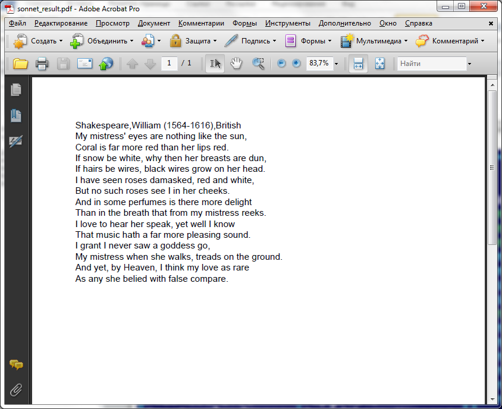

Тема: Использование языка XSLT для преобразования XML документа в форматы представления электронных документов в Интернет: HTML, PDF.
Задание: Взять в качестве исходного документа XML документ, созданый в лабораторной работе №1. Используя Пример, представленый ниже, лекции и умения, полученный в результате выполнения лабораторной работы №6, написать коммандный файл для получения из XML документа, согласно XSL правил (необходимо также Вам создать), документов HTML и PDF, хранящих указаную в первоначальном документе информацию.
Замечание. Для работы потребуются инструментальные средства: любой текстовый редактор (подойдет блокнот), парсер XSLT шаблонов Xalan (скачать), транслятор XSL-FO в PDF - FOP (скачать). Информацию про XSL-FO можно прочитать здесь.
Пусть имеется созданый XML документ.
Для преобразования в HTML мы создали шаблон
Для преобразования в XSL-FO мы создали шаблон
Пусть исходный XML документ, а также XSL шаблоны находятся в одной текущей директории. Соответсвенно в поддиректории classes находятся классы xalan и fop соответственно в директориях с такими же названиями.
Тогда комманды для преобразования могут выглядеть следующим образом:
java -cp classes\xalan\xalan.jar org.apache.xalan.xslt.Process
-IN sonnet.xml -XSL sonnetrules.xsl -OUT sonnet_tesult_html.htm
java -cp classes\xalan\xalan.jar org.apache.xalan.xslt.Process
-IN sonnet.xml -XSL sonnet2fo.xsl -OUT sonnet_result.fo
Получить PDF из XSL-FO можно с помощью комманды:
call classes\fop\fop.bat sonnet_result.fo sonnet_result.pdf
Получаем результирующие файлы

